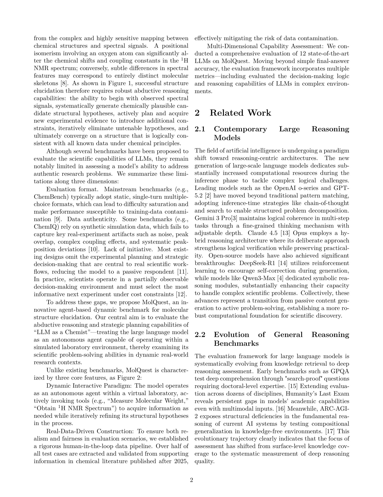

저자: Taolin Han, Shuang Wu, Jinghang Wang, Yuhao Zhou, Renquan Lv, Bing Zhao, Wei Hu | 날짜: 2026-03-26 | DOI: — | arXiv: 2603.25253

Figure 1
LLM이 실제 화학 구조 결정(chemical structure elucidation) 과제에서 다단계 추론과 실험적 상호작용을 얼마나 잘 수행하는지 평가할 수 있는 기존 벤치마크가 없었다. MolQuest는 이 공백을 메우기 위해 귀납적 추론(abductive reasoning) 기반의 에이전틱 벤치마크를 새롭게 제시하며, 정적 단일 QA가 아닌 멀티스텝 반복·실험 상호작용 포맷으로 LLM의 동적 과학 추론 능력을 측정한다.
Figure 1
Figure 1: MolQuest 벤치마크 구조 — 화학 구조 결정 태스크에서 에이전트의 다단계 추론 및 실험 상호작용 평가 프레임워크
총평: 화학 구조 결정이라는 현실적·고난도 과학 태스크에서 LLM의 에이전틱 추론을 평가하는 최초의 체계적 벤치마크로, AI for Science 평가 인프라에 실질적 기여를 한다.